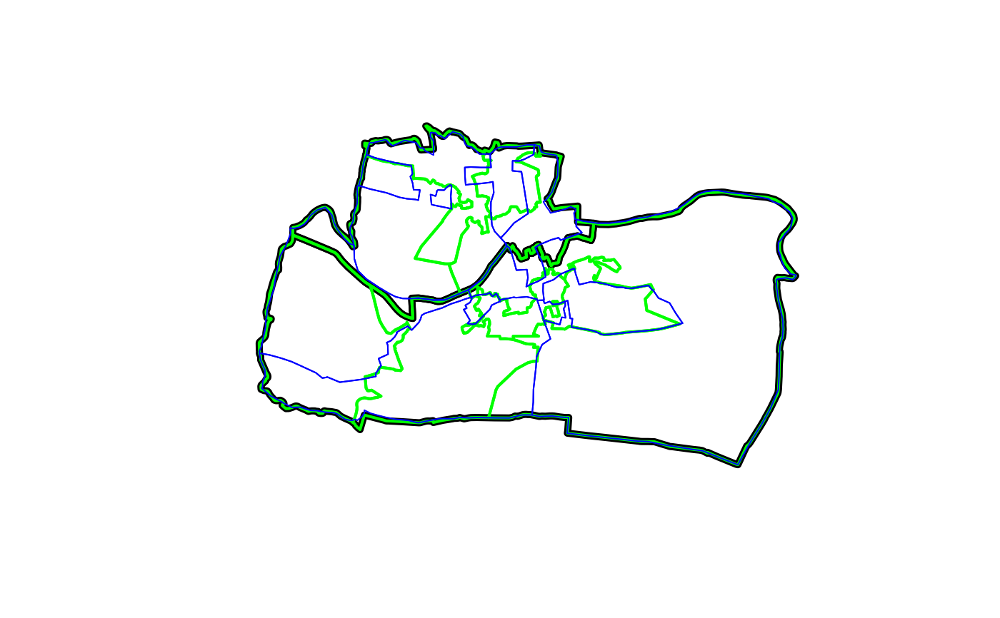

Sample of old (incongruent) and new (congruent) administrative zones from UK statistical agencies
congruentSimple feature geographic data in a projected CRS (OSGB) with random values assigned for teaching purposes.
if(requireNamespace("sf", quietly = TRUE)) {
library(sf)
plot(aggregating_zones$geometry, lwd = 5)
plot(congruent$geometry, add = TRUE, border = "green", lwd = 2)
plot(incongruent$geometry, add = TRUE, border = "blue", col = NA)
rbind(congruent, incongruent)
}

#> Simple feature collection with 18 features and 2 fields
#> Geometry type: MULTIPOLYGON
#> Dimension: XY
#> Bounding box: xmin: 417686.2 ymin: 443703 xmax: 422963 ymax: 447036.8
#> Projected CRS: OSGB 1936 / British National Grid
#> First 10 features:
#> level value geometry
#> 1 Congruent 5.060934 MULTIPOLYGON (((420725.6 44...
#> 2 Congruent 4.887273 MULTIPOLYGON (((419315.7 44...
#> 3 Congruent 4.968365 MULTIPOLYGON (((421560 4454...
#> 4 Congruent 5.493269 MULTIPOLYGON (((419023.8 44...
#> 5 Congruent 4.956924 MULTIPOLYGON (((419901 4467...
#> 6 Congruent 4.790662 MULTIPOLYGON (((420253 4461...
#> 7 Congruent 5.233551 MULTIPOLYGON (((419788.2 44...
#> 8 Congruent 4.990704 MULTIPOLYGON (((420409.5 44...
#> 9 Congruent 5.136356 MULTIPOLYGON (((418708.8 44...
#> 10 Incongruent 4.037919 MULTIPOLYGON (((420799.6 44...
# Code used to download the data:
if (FALSE) {
devtools::install_github("robinlovelace/ukboundaries")
library(sf)
library(tmap)
library(dplyr)
library(ukboundaries)
sel = grepl("003|004", msoa2011_lds$geo_label)
aggregating_zones = st_transform(msoa2011_lds[sel, ], 27700)
# find lsoas in the aggregating_zones
lsoa_touching = st_transform(lsoa2011_lds, 27700)[aggregating_zones, ]
lsoa_cents = st_centroid(lsoa_touching)
lsoa_cents = lsoa_cents[aggregating_zones, ]
sel = lsoa_touching$geo_code %in% lsoa_cents$geo_code
# same for ed zones
ed_touching = st_transform(ed1981, 27700)[aggregating_zones, ]
ed_cents = st_centroid(ed_touching)
ed_cents = ed_cents[aggregating_zones, ]
incongruent_agg_ed = ed_touching[ed_cents, ]
set.seed(2017)
incongruent_agg_ed$value = rnorm(nrow(incongruent_agg_ed), mean = 5)
congruent = aggregate(incongruent_agg_ed["value"], lsoa_touching[sel, ], mean)
congruent$level = "Congruent"
congruent = congruent[c("level", "value")]
incongruent_cents = st_centroid(incongruent_agg_ed)
aggregating_value = st_join(incongruent_cents, congruent)$value.y
incongruent_agg = aggregate(incongruent_agg_ed["value"], list(aggregating_value), FUN = mean)
incongruent_agg$level = "Incongruent"
incongruent = incongruent_agg[c("level", "value")]
summary(st_geometry_type(congruent))
summary(st_geometry_type(incongruent))
incongruent = st_cast(incongruent, "MULTIPOLYGON")
summary(st_geometry_type(incongruent))
summary(st_geometry_type(aggregating_zones))
devtools::use_data(congruent, overwrite = TRUE)
devtools::use_data(incongruent, overwrite = TRUE)
devtools::use_data(aggregating_zones, overwrite = TRUE)
}